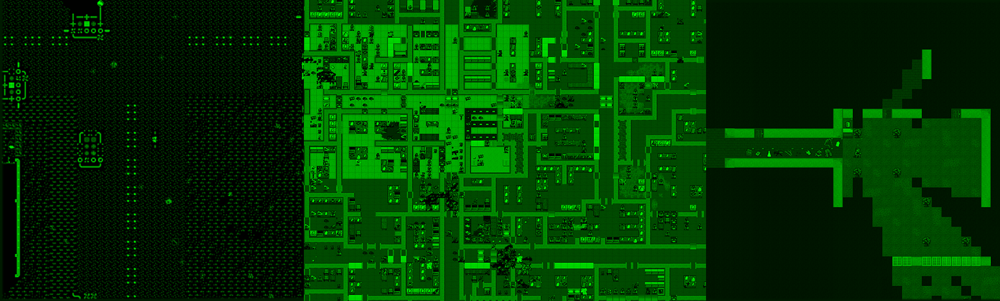

About
Cataclysm: Dark Days Ahead is a turn-based survival game set in a post-apocalyptic world. Struggle to survive in a harsh, persistent, procedurally generated world. Scavenge the remnants of a dead civilization for food, equipment, or, if you are lucky, a vehicle with a full tank of gas to get you the hell out of Dodge. Fight to defeat or escape from a wide variety of powerful monstrosities, from zombies to giant insects to killer robots and things far stranger and deadlier, and against the others like yourself, that want what you have…
Gameplay
As your game begins, you awaken with hazy memories of violence and terror from when the world suddenly unravelled around you. Now you need to explore your surroundings, and secure food, water and safety. After that, who knows? Long term survival will mean tapping abilities you haven’t used before, learning to survive in this new environment, and developing new skills.
Project Managed Resources
These sites are owned and managed by the project directly.
- GitHub repository
- Forums
- Development-oriented Discord
- IRC channel: irc.libera.chat channel: #CataclysmDDA webchat
Community Managed Resources
These are resources provided by third parties that the project sees as helpful to users.
- Wiki
- ItemBrowser
- Hitchhiker’s Guide to the Cataclysm
- Game Launcher
System Requirements
Minimum
“I played catadda 0.B on Lego EV3 brick through ssh about a year ago. Every simple move took a noticeable fraction of a second (like 0.3-0.5 second), crafting and such was very slow as well. The specs were - 300 MhZ CPU, 64 Mb Ram (+ another 64 Mb swap on microsd flash) running ev3dev (stripped ubuntu basically), ssh over USB CDC connection.” -burgerpro
“I used to test the game on an Asus EEE 700. That’s a 900MHz mobile cpu with 500MB of ram.” -Kevin Granade
Tilesets increase the amount of RAM required dramatically. I recommend at least 1GB of ram for tilesets, and there are reports of instability due to RAM exhaustion when certain tilesets are used. (The larger the size of the individual tiles, the more RAM is used)
Recommended
“I regularly test the game now on a Windows netbook with a sub 2GHz single core CPU, 1GB of ram, and no graphics acceleration.” -Kevin Granade
Graphical builds run much faster with some kind of graphics acceleration. 2GB of RAM pretty much guarantees you will never have trouble with memory shortages.
Downloads
If you want to download the game you can acces it here
The most recent stable release is 0.F-2 Frank-2. We recommend stable for the most bug-free experience available. You can download it from the Releases Page.
Latest Experimental
Cataclysm: DDA is under constant development. As such, stable can lag behind with features. If you would like access to the bleeding edge of features and any bugs that may come along with them, you can download the latest experimental builds.